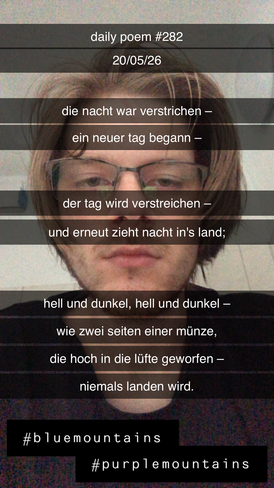

Reger Wandel
[282]Die Nacht war verstrichen –
Ein neuer Tag begann –
Der Tag wird verstreichen –
Und erneut zieht Nacht in's Land;
Hell und dunkel, hell und dunkel,
Wie zwei Seiten einer Münze,
Die, hoch in die Lüfte geworfen –
Niemals landen wird.
